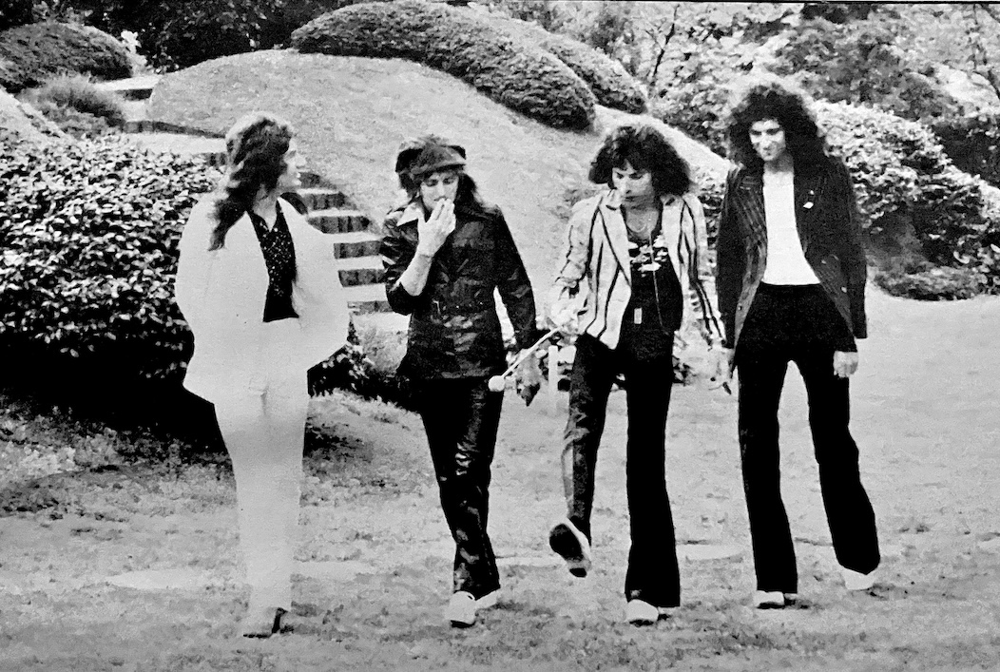

Interview with Freddie Mercury
Light Music Magazine "Super Rock '76" Special Issue, Dec 1975
"This new album will be rock'n'roll with an operatic twist!"

Queen, who cause a sensation when they came to Japan for the first time this past spring, have completed the production of their fourth album and started a world tour. We sat down with the band's leader [sic], Freddie Mercury, to ask about Queen's future.
LM: We'd like to know more about your fourth album. When did you start preparing the material?
Freddie: It's titled A Night at the Opera. We started preparing about five or six months ago. We thoroughly consider everything we do, no matter how small. We always start from scratch, so it always takes a long time. We hardly leave anything to chance. That's why it takes so much time to make one album. The most important thing about our album is when it comes to recording, we don't allow any outside input other than us four. We do it all by ourselves, the four of us. In the case of this album, as you can probably tell from the title, we consciously incorporated elements of traditional opera into our songs. In other words, it's rock'n'roll with an operatic twist. All four of us contributed our own songs to this album, but most of them were done between Brian and me. There are eleven songs in total, and one of them is the British national anthem, God Save the Queen. We play it with love and respect.
LM: What's your latest single?
Freddie: Just recently we've released a song called Bohemian Rhapsody. It's a very long song, six minutes long. Our record company is making a big fuss about it, but I absolutely refused to agree to shorten it. This song has quite complex elements to it, and onstage it can be broken down into several movements, so if we shortened it, it would lose its true meaning. The B-side is a song that Roger wrote, and he also sings lead on it. I think it's a great contrast to the A-side.
LM: Who is your favorite vocalist?
Freddie: Oh there are so many, I couldn't name just one. Let's see. John Lennon, Bob Dylan, Roger Grutree, Robert Plant... but one who really resonates with me is Joni Mitchell. I think her vocal range and control are quite amazing. We're sometimes compared to Led Zeppelin, and that makes us very happy, because we all love Led Zeppelin. But our actual stage performances are quite different. We create quite a sound onstage.
LM: How did you come to master singing?
Freddie: Well I've been singing for a long time, really. I sang in the school chorus and before Queen was formed, I had experience with a few semi-amateur bands. But it wasn't until Queen that I became confident that I had the talent to stand on my own with just my singing. Roger and I have been friends for over ten years now, and we've always worked hard together to create a professional band. That's the answer.
LM: Can you discuss some of the struggles Queen faced in achieving their current level of recognition?
Freddie: Just as we thought that the first step toward success had finally truly begun, everything fell into place. We just started, and before we knew it, we ended up here. But we never tried to rush things. It took quite a while for things to go smoothly, and all four of us went to school to get our respective qualifications. We knew show business was a pretty tough job, so we wanted some kind of security in case things didn't work out. That's why Roger, Brian, and John all got their degrees, and I have an art degree. I designed the Queen logo. I also designed the cover for the first album and the crest. But we hardly have time for this sort of thing anymore. Brian was on the cusp of getting his doctorate in astrophysics [but there isn't time anymore]. From the moment we formed Queen, we knew there was a possibility we wouldn't make it and fall back into a world unrelated to what we wanted to do, so we took our tapes everywhere because we had nothing to lose. No matter how good the business offers and terms were, if they didn't fit the group's goals, we rejected them. But gradually, we started to realize that the situation we had found ourselves in [with Trident] ultimately wasn't good for us. Recently, we've finally made progress in sorting things out and have reached the point of signing a contract with Elton John's manager.
But you know, because of our previous contracts, we've been burdened financially, and we'll have to pay a significant percentage of the money from the next few albums we release. We can't even explain to you how upset we are! I think John Reid, Elton John's illustrious manager, will surely help us forget this unpleasant experience. In fact, that's what he's done for Elton. Anyway, we're all following his advice and trying to forget the bad side of it. What matters is what we do from now on, and there's nothing we can do about the past.
[QIJ note: The following paragraph is attributed to Freddie, but I have a sneaking suspicion the LM editors themselves slid this in as exposition, as it doesn't seem to be something Freddie would go into great detail on.] Let's just take a look back at our journey thus far. Our first album and singles didn't do well on the UK charts at all. The single was Brian's Keep Yourself Alive. It was only with the second album that we finally managed to get both a single and an album into the top 10. But in America, unlike in the UK, our first album made it to the Top 80, which is quite an achievement for an unknown band. Then, while we were touring the US as a supporing act for Mott the Hoople, our second album managed to crack the top 40. Midway through this tour, Brian fell ill, and the rest of the tour was cancelled. We suspended activities for nearly six months while Brian was recuperating and then our third single, Killer Queen, becamse a huge hit. It's my song. You could say that this song set Queen on its path. It reached #1 in the UK, Japan, and two or three other countries. It ranked in the top 10 in the US. The album that included Killer Queen, Sheer Heart Attack, also reached the top 10 in the US and climbed to the top 3 in the UK. Thanks to this, we were able to tour as a top-class band, performing in various European countries, America, Japan, and Australia. Everything was a huge success, which helped to elevate Queen's status worldwide.
Our current goal is to become the world's #1 rock band. We want to be a rock band that would surprise even Led Zeppelin! To be honest, our goal isn't so much about Zeppelin or anything like that, but rather to bring the music we want to make to a level that's considered perfect. To do that, we want to sustain our current success for as long as possible. That's why we've decided to take responsibility for everything that concerns us as a group, from recording and stage production to live performances, filming, and even our costumes. This is the best way. I don't think there is any other way. Even our albums are the collaborative effort of all four of us.
So naturally we spent a lot of time on this fourth album. We also spent a lot of time preparing for our world tour, which starts in the UK in November, until we were completely satisfied with it. I'm confident that when people see us onstage, they'll see how much we've grown. Our new single seems to be a hit with a lot of DJs and "guaranteed to blow your mind".
LM: Has Queen ever covered songs by other artists?
Freddie: The only songs Queen has covered onstage so far are Elvis Presley's Jailhouse Rock and Big Spender. We have absolutely no intention of recording those, though. People who listen to us say that they sound really good the way we play them live.
LM: What songwriters and arrangers do you admire?
Freddie: Hnn. The Beatles, Led Zeppelin. Yes, Jimi Hendrix, Joni Mitchell, Bob Dylan, and more, each in their own way. That's because everything they do is full of their own unique personality, and every single one of their works is of a very high quality.
LM: Who do you think is the most influential group in the global rock scene right now?
Freddie: Elton John and Zeppelin. I think these two entities are the most important musicians in the world, both in terms of recording and stage performance. Paul McCartney is king of the studio, but when it comes to live performances I feel liek the other two are a little bit ahead of him.
LM: What about Queen going forward? What direction are you headed in?
Freddie: Queen will continue to do things our own way—that is, insanely yet confidently. We want to keep exploring what our original sound means to us and express it perfectly. We absolutely do not want to do things in a way that we are not completely satisfied with. The word "compromise" doesn't apply to us. That's why we argue so much within the group. I think it's only by putting our best on each other that we can produce something we're truly pleased with. Even though we're planning to continue the same style, we'll naturally incorporate our personal preferences and ideas, so in a sense, I think there will be a lot of change. I don't believe we'll hit a dead end. Whatever songs we play, we want them to be recognized as Queen. We absolutely don't want to copy anyone else, so the setlist may change, the costumes and show format may change, but the essential essence of Queen will always remain the same.
LM: Can you elaborate on your thoughts and feelings regarding the following musicians: The Beatles, Led Zeppelin, Cream, Deep Purple, Yes, and Bay City Rollers.
Freddie: Hmm. I think they're all original musicians. They all have a huge influence in their own way. John Lennon is one of my absolute favorites, and Paul McCartney is perhaps a musician's musician; I think they made a huge contribution to the world of music in their own unique way. I still listen to their records often. Lennon's Imagine is probably my all-time favorite records. As I've mentioned before, Zeppelin is the ideal of modern rock for me. The world's best drummer, best bassist, the lead guitarist, the lead vocal. Roger and John feel the same way. Cream, through their own unique approach, had a huge impact on everyone. But speaking from personal experience, I prefer Hendrix to Clapton. Deep Purple is great too. I think their older stuff is better than their recent work. Queen is often compared with them, although frankly I don't see any similarities at all. And of course Yes is one of the top rock groups in the world. The Bay City Rollers have a cutesy feel compared to other bands. Because of that, I don't think they're taken as seriously musically. Plus, their dress-up style is a bit jejune. British journalists are always trying to compare them to The Beatles, which is frightfully rude and an insult to The Beatles. But they seem to have found their own niche, which is fine for them, I guess. I just wish their music was a little more cohesive.
LM: Time for our last question! When will you be coming back to Japan?
Freddie: As I mentioned earlier, our UK tour starts in November. The final stop will be London, where we'll probably play seven or eight shows at the Hammersmith Odeon. These shows are definitely going to be recorded live. This will continue through Christmas in December and then we'll head into the new year with a European tour, then America, and then finally Japan. These dates were only recently finalized. We'll probably be in Japan around March or April. See you then!